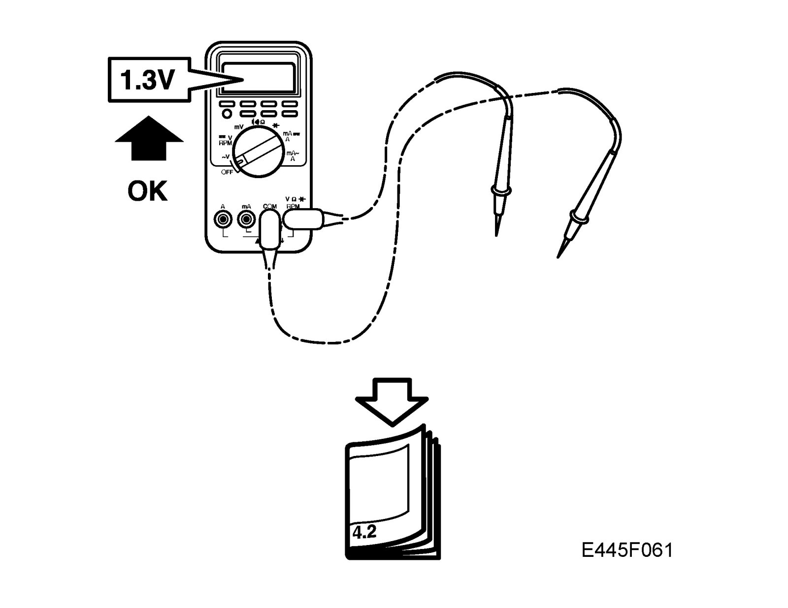
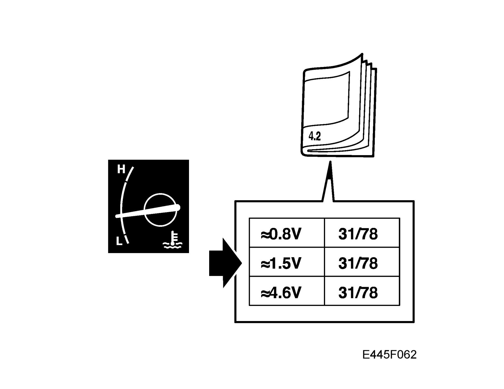
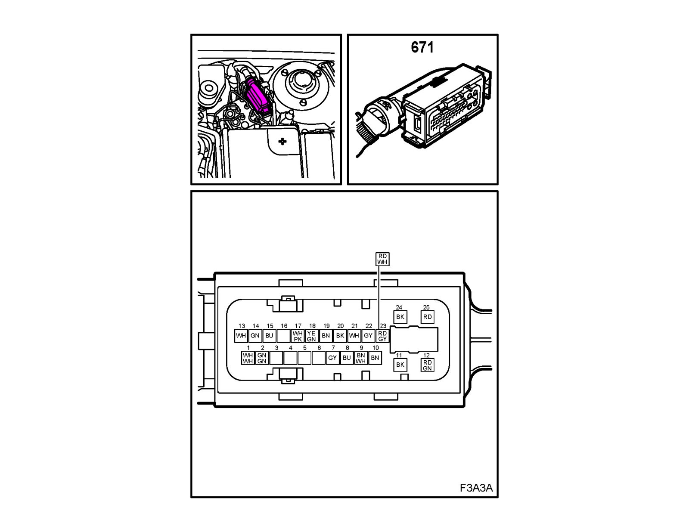
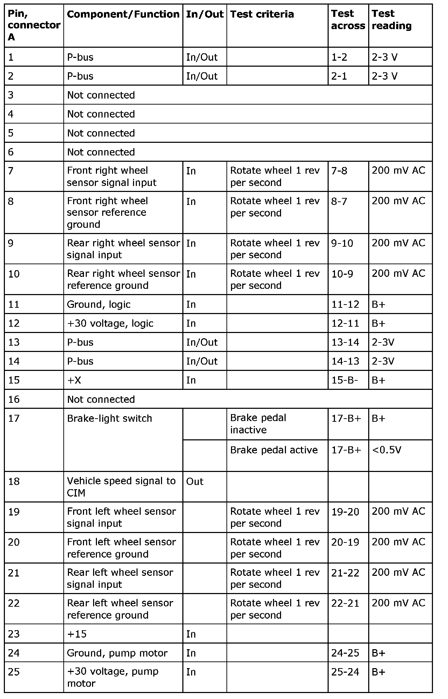

Electrical Specifications
Test readings TCS (382)/ESP (671)

Scope
Following are readings and directions for measuring signals and levels of the transmission control module. Pin numbers missing in the table are not used.
Remember
^ Observe the test criteria and use common sense when assessing the test results.
^ The test reading presented here are with the ignition ON unless stated otherwise.
^ Check first that the control module is receiving power and is grounded.
^ Then check all the sensor inputs and signals from other systems.
^ Finally, check the control module outputs. Remember that test values do not confirm whether the actuator is in working order.
^ If any of the test readings is incorrect, use the wiring diagram to locate the leads, connectors or components that should be checked further.
^ Specified test readings are for a calibrated Fluke 88/97.
^ Test readings %(+) and ms(+) show the signal pulse ratio and pulse width respectively. A scan tool that can measure pulse ratio and pulse width respectively must be used. The sign indicates a positive trigger pulse, TRIG+.
Connecting and test readings
TCS (382)
ESP (671)

Note
All units on the I and P buses send signals.
